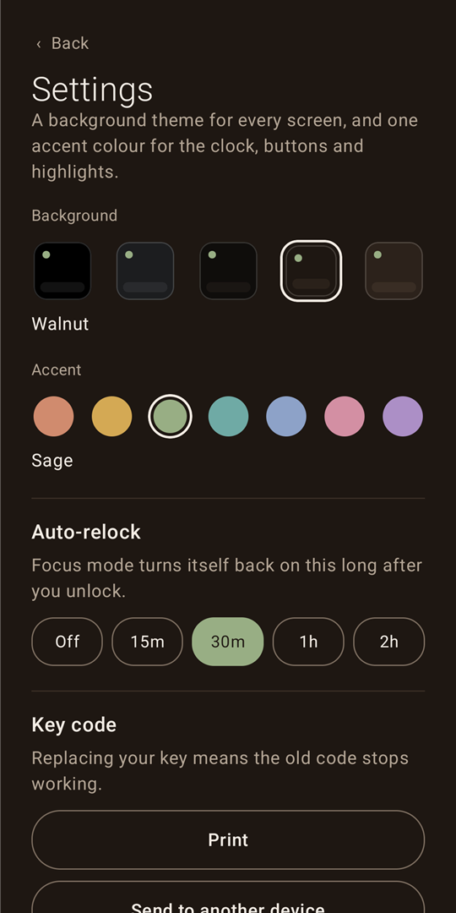
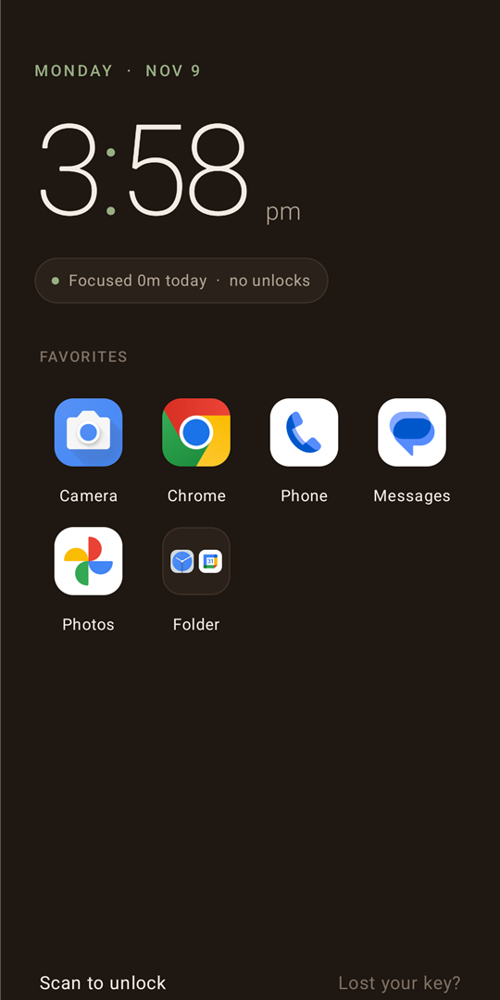
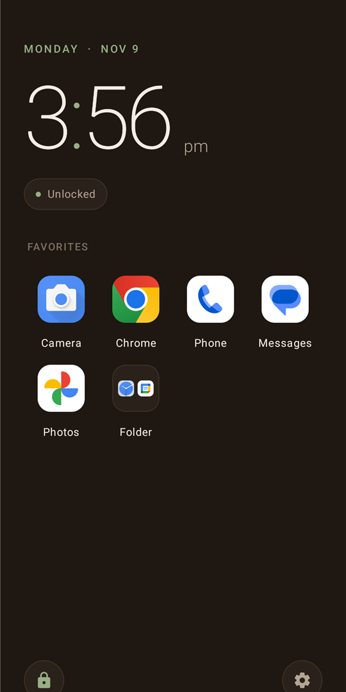
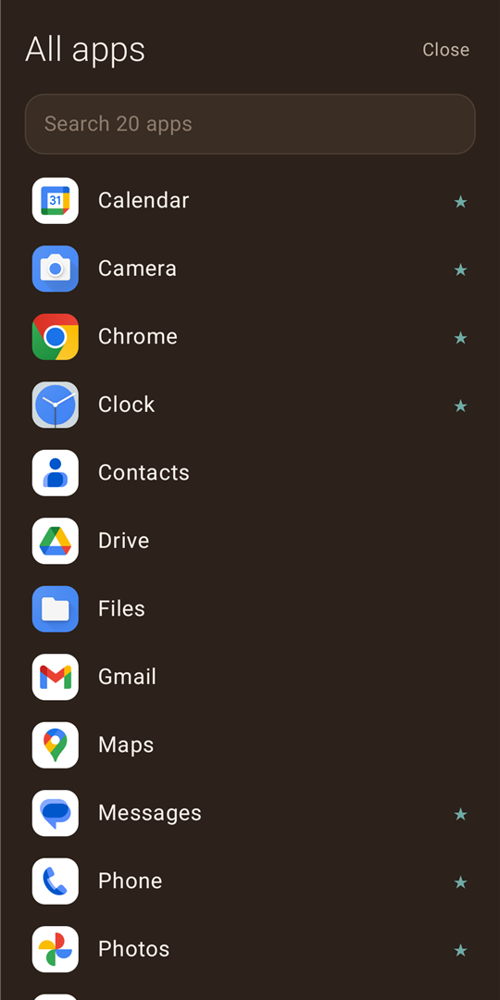
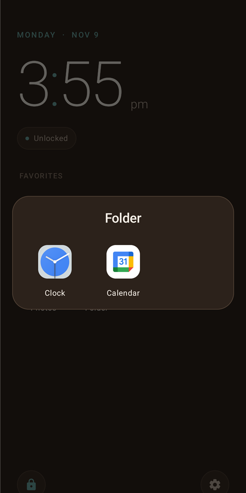
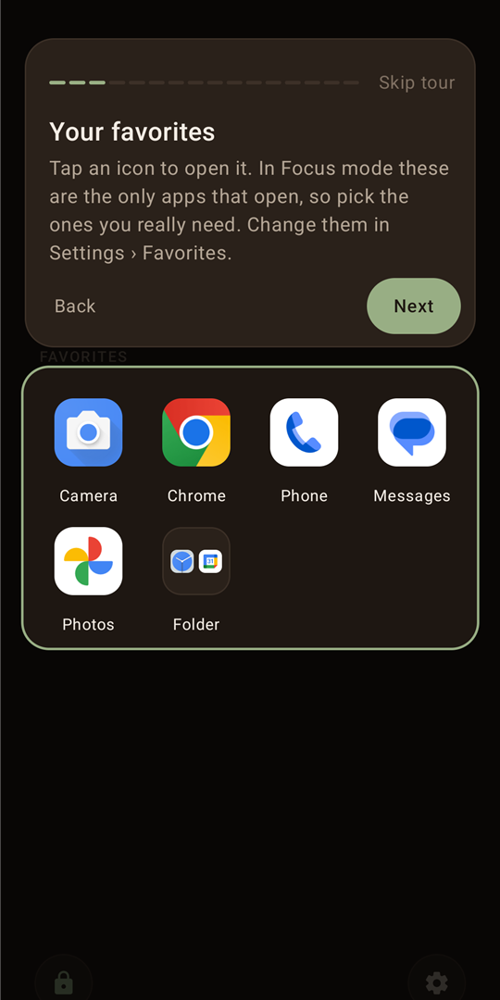
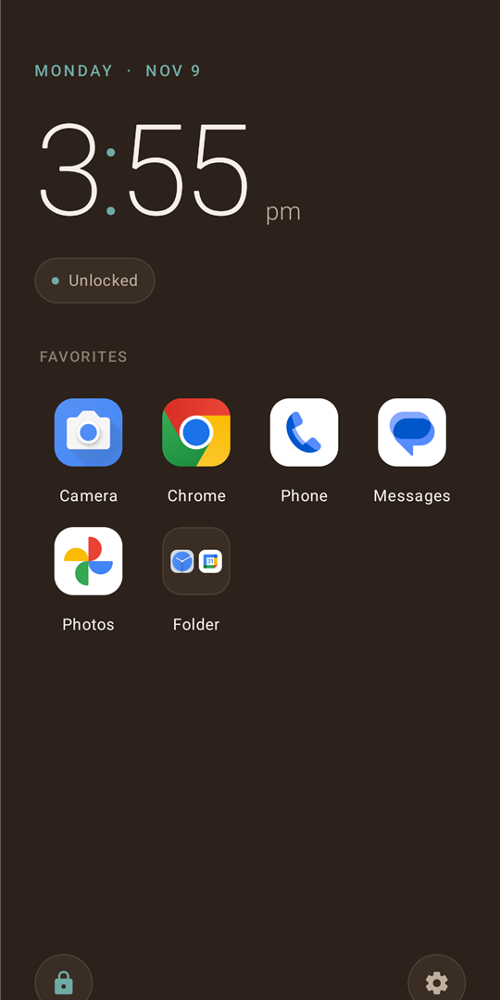
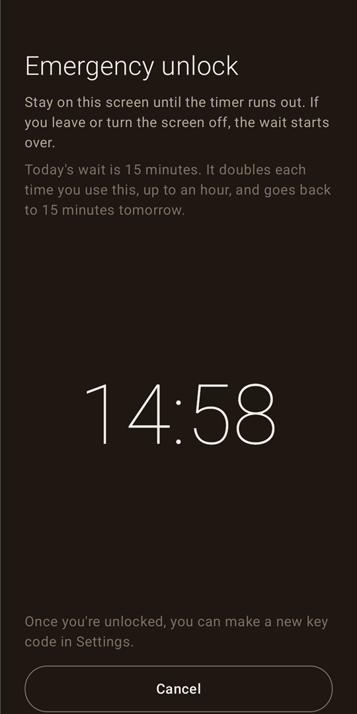

Five backgrounds. Seven accents.
One accent colours the clock, the buttons and every highlight.




One accent colours the clock, the buttons and every highlight.

Drop one app on another.

The first lost-key wait of the day. Then 30, then 60.
The only trace of your key the phone keeps. Only a live scan counts.
Right after setup, step by step. Replay it any time.



Only your favorites open. Everything else waits.
Every app comes back, one swipe left.
Focus mode comes back on its own. Changing the clock does nothing.
Sit out fifteen minutes on this screen. Leave, and it starts over.
| 1.6Public releaseGitHub | 1.7Dev build, in testing | |
|---|---|---|
| Themes and accents | ||
| Icons, folders and the drawer | ||
| QR key, auto-relock, lost-key wait | ||
| First-run tour | ||
| Swipe-right dashboard | No | |
| Add and edit to-dos | No |
Screenshots on this page were captured from 1.7; every screen shown is also in 1.6.